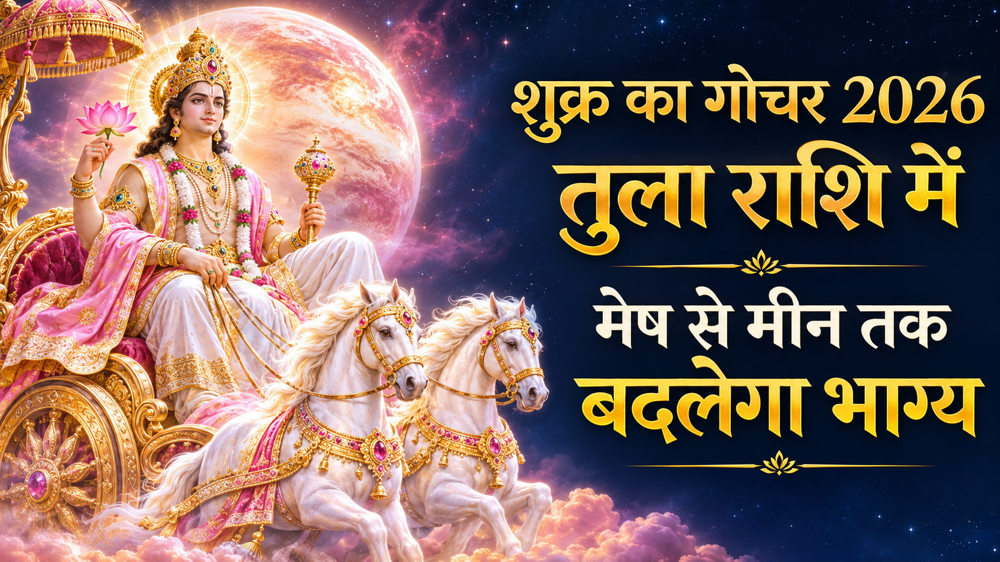

शुक्र गोचर 2026: तुला राशि में शुक्र का प्रवेश—मेष से मीन तक जानें सभी 12 राशियों पर असर
आज, 22 नवंबर 2026 को शुक्र कन्या राशि से निकलकर अपनी राशि तुला में लौट रहे हैं। प्रेम, संबंध, कला, सौंदर्य और सुख-सुविधाओं से जुड़े इस शुक्र गोचर को लेकर पाठकों का सवाल है—शुक्र का तुला राशि में प्रवेश आपकी राशि के लिए क्या संकेत दे रहा है? यहाँ मेष से मीन तक पारंपरिक वैदिक ज्योतिष के आधार पर सरल फल और एक सहज मंत्र दिया गया है।
तुला राशि का स्वामी कौन है?
तुला राशि के स्वामी शुक्र हैं। इसलिए तुला में शुक्र अपनी ही राशि में माने जाते हैं।
शुक्र को मज़बूत करने के आसान उपाय क्या हैं?
शुक्रवार को सफ़ेद चीज़ों जैसे चावल, दूध या मिश्री का दान और "ॐ शुं शुक्राय नमः" मंत्र का जाप करें। रत्न पहनने से पहले कुंडली ज़रूर दिखाएँ।
क्या यह फल सभी लोगों पर एक जैसा लागू होता है?
नहीं। यह चंद्र राशि पर आधारित सामान्य फल है। व्यक्तिगत फल जन्म कुंडली में शुक्र की स्थिति और दशा पर निर्भर करता है।
गोचर का समय: नई दिल्ली के Drik Panchang के अनुसार 22 नवंबर 2026, शाम 5:38 बजे। अलग पंचांग, स्थान और गणना-पद्धति में समय कुछ मिनट बदल सकता है; स्थानीय पंचांग देखें। शुक्र 6 नवंबर को वक्री अवस्था में कन्या लौटे थे और 14 नवंबर के आसपास मार्गी होने के बाद अब तुला में पुनः प्रवेश कर रहे हैं।
लेखक की टिप्पणी — पं. राजू पाठक: गोचर को अकेले देखकर अंतिम निष्कर्ष नहीं निकालना चाहिए। जन्मकुंडली में शुक्र की स्थिति, दशा और लग्न के साथ बाकी ग्रहों का संबंध भी फल बदल सकता है। नीचे दिए संकेत सामान्य हैं, निश्चित भविष्यवाणी नहीं।
शुक्र का तुला राशि में गोचर क्यों खास है?
वैदिक ज्योतिष में शुक्र को प्रेम, दांपत्य, कला, आकर्षण, आराम और भौतिक सुखों का कारक माना जाता है। तुला शुक्र की अपनी राशि है और इसे संतुलन, साझेदारी तथा न्याय से जोड़ा जाता है। इसलिए यह गोचर रिश्तों में बातचीत, कामकाजी साझेदारी और सुंदरता या रचनात्मकता से जुड़े कामों पर ध्यान खींच सकता है। इसका अर्थ यह नहीं कि हर व्यक्ति को एक जैसा परिणाम मिलेगा।
इस समय के बड़े ग्रह गोचर को भी संदर्भ में देखना उपयोगी है। गुरु का गोचर विकास और सीखने के विषयों को, शनि गोचर जिम्मेदारी और धैर्य को, जबकि राहु-केतु गोचर बदलाव और प्राथमिकताओं को ज्योतिषीय परंपरा में दर्शाते हैं। शुक्र का फल इनसे अलग करके नहीं, बल्कि पूरी जन्मकुंडली और चंद्र राशि के संदर्भ में पढ़ा जाता है।
शुक्र गोचर 2026: सभी 12 राशियों पर प्रभाव
मेष राशि
साझेदारी और दांपत्य में संवाद को सहज बनाने का अवसर मिल सकता है। अविवाहित लोग किसी परिचय को आगे बढ़ाने से पहले समय लें। व्यापार में नई साझेदारी हो तो शर्तें स्पष्ट रखें।
वृषभ राशि
शुक्र आपकी राशि के स्वामी हैं; काम की दिनचर्या, सहयोग और सेहत की आदतों पर ध्यान बढ़ सकता है। सहकर्मियों से तालमेल बेहतर करने के लिए विनम्र बातचीत काम आएगी। आराम या खरीदारी पर बजट देखकर खर्च करें।
मिथुन राशि
रचनात्मक काम, प्रेम-संबंध और बच्चों से जुड़ी योजनाओं में प्रसन्नता के संकेत हैं। कला, लेखन या प्रस्तुति से जुड़े लोग अपने विचार दिखा सकते हैं। जल्द लाभ की अपेक्षा रखने के बजाय अभ्यास जारी रखें।
कर्क राशि
घर-परिवार, साज-सज्जा और अपनों के साथ समय पर ध्यान जा सकता है। घरेलू खरीदारी या मरम्मत में योजना बनाकर चलें। परिवार में पुरानी बात पर असहमति हो तो नरम लहजा मददगार रहेगा।
सिंह राशि
बातचीत, छोटी यात्राओं और संपर्कों के जरिए नए विचार मिल सकते हैं। भाई-बहनों या पड़ोसियों के साथ समन्वय रखें। किसी प्रस्ताव को केवल आकर्षक शब्दों के आधार पर स्वीकार न करें; विवरण पढ़ें।
कन्या राशि
पैसे, बचत और अपनी प्राथमिकताओं की समीक्षा का समय है। परिवार के साथ वित्तीय बातचीत स्पष्ट रखें और दिखावे के खर्च से बचें। अपनी प्रतिभा का उचित मूल्य माँगना भी इस गोचर का सकारात्मक उपयोग हो सकता है।
तुला राशि
शुक्र का अपनी राशि में आना आत्मविश्वास, व्यक्तित्व और संबंधों में संतुलन पर जोर देता है। अपनी पसंद और ज़रूरतें साफ़ कहें, लेकिन सामने वाले की बात भी सुनें। रूप-रंग या सुविधा पर खर्च करते समय सीमा तय करें।
वृश्चिक राशि
कुछ समय अकेले रहकर भावनात्मक और आर्थिक मामलों को समझना उपयोगी हो सकता है। पुराने संबंधों या अधूरे खर्चों पर दोबारा विचार आए तो जल्दबाजी न करें। नींद और आराम की दिनचर्या संभालें।
धनु राशि
मित्रों, समूहों और भविष्य की योजनाओं में सहयोग मिल सकता है। नेटवर्किंग से काम के अवसर बनें तो लक्ष्य और समय-सीमा लिख लें। किसी मित्र को धन उधार देने से पहले अपनी सुविधा पर विचार करें।
मकर राशि
कामकाज में छवि, जिम्मेदारियों और वरिष्ठों से संबंधों पर ध्यान देना पड़ सकता है। रचनात्मक तरीके से अपनी बात रखें और परिणाम दिखाएँ। गुरु और शनि के गोचर की तरह दीर्घकालीन योजना भी साथ रखेंगे तो निर्णय अधिक संतुलित होंगे।
कुंभ राशि
अध्ययन, यात्रा, मार्गदर्शन और नए दृष्टिकोण के लिए उत्सुकता बढ़ सकती है। किसी शिक्षक या अनुभवी व्यक्ति से सलाह लाभकारी रहेगी। प्रेम या धन से जुड़ी मान्यता को परखें; राहु गोचर के समय चर्चित विषयों को भी तथ्य और विवेक से देखें।
मीन राशि
साझा धन, भावनात्मक निकटता और भरोसे से जुड़े विषय सामने आ सकते हैं। साथी के साथ आर्थिक योजना खुलकर बनाएं। किसी निवेश या बड़े खर्च से पहले पूरी जानकारी लें और आवश्यकता हो तो योग्य वित्तीय सलाहकार से पूछें।
शुक्र मंत्र और सरल उपाय
शुक्रवार को स्वच्छता और संयम के साथ पूजा करें। श्रद्धा हो तो सफेद पुष्प अर्पित कर 11 या 108 बार यह मंत्र जप सकते हैं:
ॐ द्रां द्रीं द्रौं सः शुक्राय नमः॥
उपाय के रूप में रिश्तों में सम्मान, वचन निभाना, कला का अभ्यास और सामर्थ्य के अनुसार जरूरतमंद की सहायता करना अपनाएँ। रत्न धारण करने या महँगा उपाय करने से पहले अपनी कुंडली किसी योग्य ज्योतिषी को दिखाएँ। मंत्र को व्यक्तिगत आस्था का अभ्यास समझें, किसी समस्या के निश्चित समाधान की गारंटी नहीं।
🙏 पंडित राजू पाठक की सलाह
अक्सर पूछे जाने वाले सवाल
शुक्र गोचर 2026 कब है?
नई दिल्ली के Drik Panchang के अनुसार शुक्र 22 नवंबर 2026 को शाम 5:38 बजे तुला राशि में प्रवेश करेंगे। स्थान और गणना के कारण पंचांगों में समय का अंतर संभव है।
शुक्र का तुला राशि में गोचर किन बातों से जुड़ा है?
परंपरागत ज्योतिष में इसे संबंध, साझेदारी, कला, सौंदर्य और संतुलन से जोड़ा जाता है। व्यक्तिगत फल जन्मकुंडली और दशा पर निर्भर करता है।
क्या यह गुरु गोचर, शनि गोचर या राहु गोचर से जुड़ा है?
ये अलग-अलग ग्रहों के गोचर हैं। ज्योतिषी पूरी कुंडली में इनके संयुक्त संदर्भ को देखते हैं; केवल शुक्र के राशि परिवर्तन से सभी परिणाम तय नहीं होते।
स्रोत और समय-संदर्भ: Drik Panchang — 2026 Venus Transit, New Delhi। एक Lahiri-आधारित गणना में समय 5:21 PM IST भी दिया गया है; इसलिए स्थानीय पंचांग का समय मानें। यह लेख पारंपरिक ज्योतिषीय मान्यताओं पर आधारित है।
और पढ़ें: राहु-केतु गोचर 2026 · शनि साढ़ेसाती और ढैय्या 2026-27 · गुरु-मंगल-केतु युति